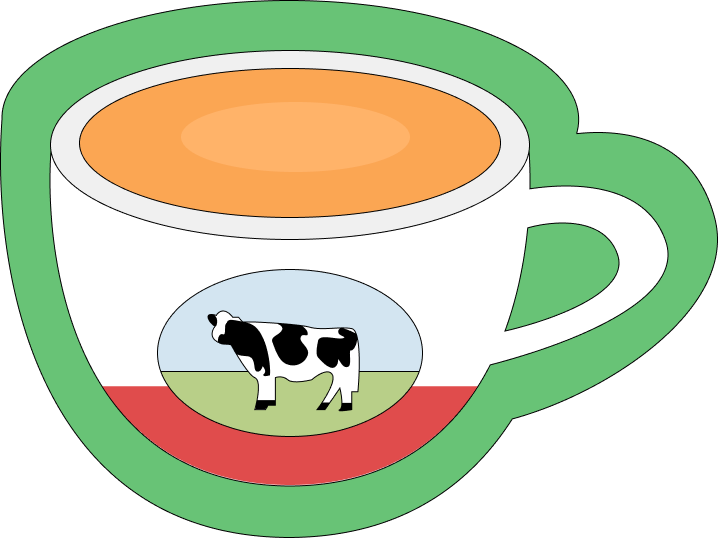

2 tablespoons black tea leaves (a tea blend like Ceylon or Assam)
1/4 cup sweetened condensed milk (adjust to personal taste)
Optional: evaporated milk or whole milk for creaminess

HK style milk tea
instructions
In a saucepan, bring the water to a boil.
Once boiling, add the black tea leaves. Let it boil for about 3-5 minutes, depending on how strong you want the flavor.
Remove from heat and strain the tea into a heatproof container to separate the leaves. You can use a fine mesh strainer or a tea sock for this step.
While the tea is still hot, add the sweetened condensed milk and stir well. If you like a creamier texture, you can add some evaporated milk or whole milk at this stage.
Taste your milk tea and adjust the sweetness or creaminess as desired.
You can serve it hot or let it cool and serve over ice for a refreshing iced version.